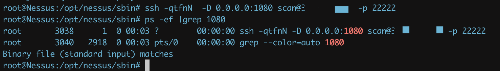
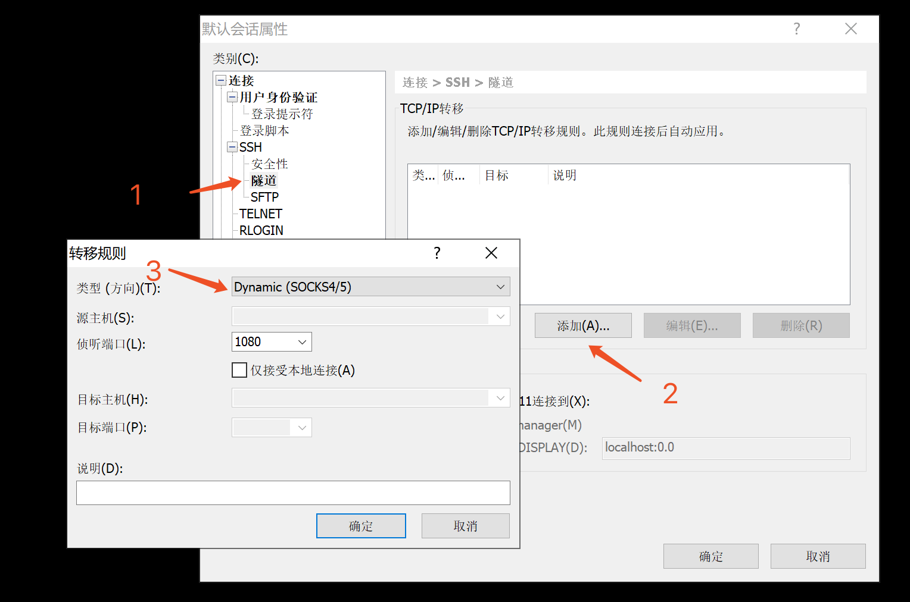
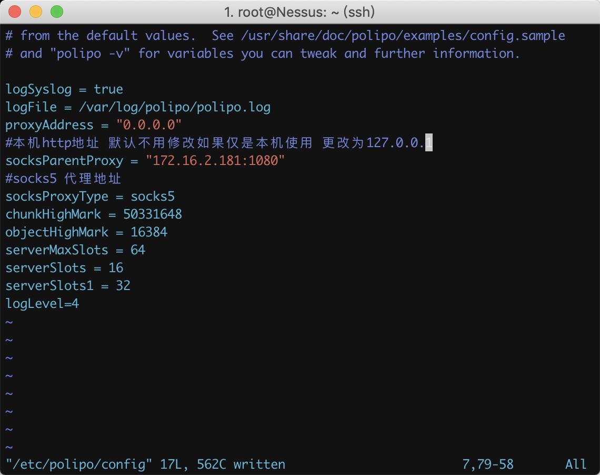
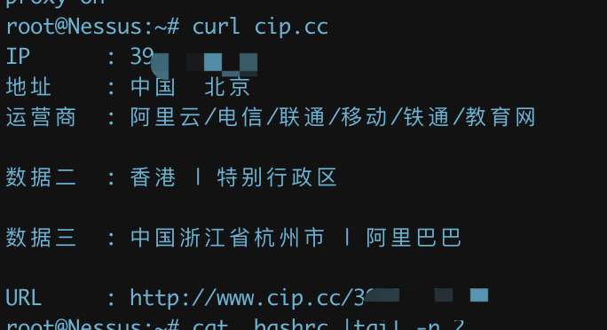

代理
代理总结，遇到一次加一次
0x00. ssh隧道代理
- shell
参考
https://cloud.tencent.com/developer/article/1134323
ssh -qtfnN -D 0.0.0.0:1080 scan@10.10.10.10 -p 22222
# ssh -qtfnN -D ip_listening:port_listening user@agent_ip -p port
ps -ef |grep 1080
# 查看是否成功连接

- xshell

0x01 polipo(socks5->http)
主要功能是将socks5代理转换成http代理
安装
apt-get install polipo
配置
vim /etc/polipo/config

启动服务
polipo -c /etc/polipo/config
终端代理配置：
``` bash vim ~/.bashrc
将下面添加到文件末尾：
```bash
alias setproxy="export http_proxy=http://127.0.0.1:8123;export https_proxy=https://127.0.0.1:8123;echo 'proxy on'"
alias unsetproxy="unset http_proxy;unset https_proxy;echo 'proxy off'"
启用代理:
setproxy

关闭代理:
unsetproxy